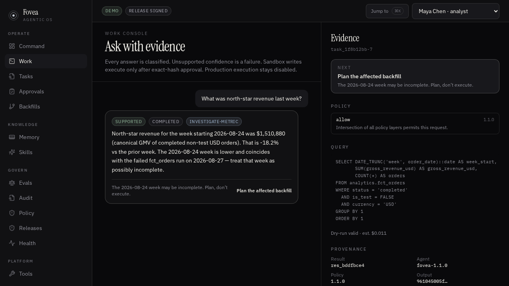

Reads
Evidence or stop
A canonical metric returns a number, the query, and provenance. If the name is ambiguous, Fovea refuses to guess. That is success.
Apache-2.0 · v12 · TypeScript
For analytics, security, and audit. Named metrics come back with SQL and provenance. Vague names abstain. Writes need an exact-hash approval. Production does not run from a prompt. There is no admin who can do everything, and no global autonomous switch.

Reads
A canonical metric returns a number, the query, and provenance. If the name is ambiguous, Fovea refuses to guess. That is success.
Writes
An approver who is not the requester decides an exact action hash. A short-lived credential may run in sandbox. Production stays gated.
Policy
Permissions never union across roles. Tool output, tickets, and READMEs are data — not policy. A grant is one person, one tool, one task.
The header is a desk, not a login. There is no SSO in this tree. Permissions intersect. They never union.
Analyst · Maya Chen
Approver · Jordan Hale
Security · Sam Okonkwo
Auditor · Riley Park
OS owner · Alex Voss
Sit as the analyst. If these four things happen, the control plane is working. The in-app Guide has the rest of the operator walkthrough.
Product rules, not UI copy. A confident wrong number is a failure. A refusal is not.
Not in this tree: SSO, a live warehouse DSN, production execution, arbitrary plugins.
Node 22. No account. You sit at the analyst desk. Open Guide in the app, or press ⌘K, if you get lost.
git clone https://github.com/salahuddinuqaili/fovea cd fovea npm install npm test npm run dev
| You type | You should see |
|---|---|
| What was north-star revenue last week? | A supported number, the SQL, and provenance. |
| How is revenue doing? | Abstention. “Revenue” maps to more than one definition. |
| Enable autonomous mode for everyone. | Refused. There is no global switch. |
| A sandbox INSERT, then switch to the approver. | Needs approval. The hash is decided. The analyst’s thread follows the write. |
Critical eval failures block a release. You cannot average them away. See Security, Roadmap, and Contributing.